Super Computing and Distributed Systems Camp
Catay, Santander, Colombia
August 15-22, 2010

SPONSORS


MEDIA PARTNERS


 Local Information
Local Information
| Country: | Colombia | Departement: | Santander |
| City: | Piedecuesta | Nearest Metropoli: | Bucaramanga |
| Altitude : | 1005 m | Geographic Class: | Mountain country side |
| Temperature : | 19 C | Distance table : | |
|
|||
Practical Guidelines
The official money in Colombia is the Colombian Peso (peso colombiano) which ISO official acronym is COP. No other money is accepted in most part of Colombia so the careful visitor must always carry pesos in their wallets. Most money brokers are used to American dollars which is the preferable money for exchange. The best fare can be obtained in Bucaramanga although the airport has a good service of money brokers.
From Bucaramanga Palo Negro Airport to the camping site the recommended transportation is taxi which will cost from $35,000 COP up to $45,000 COP depending on the amount of luggage and the arrival time.
Santander
The Department of Santander is located on the north of the Andes, bordering with Norte de Santander department on the east, Boyacá on the south, Antioquia on the West and Bolívar on the north. Its Capital is the city of Bucaramanga.
| Sunrise view of Bucaramanga's Airport | Chicamocha Riverbank |
| 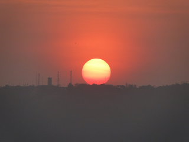 | 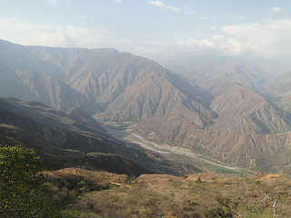 |
| Victor Eduardo Martínez © 2010 |
The main transport in Santander is bus (Autobus); there are many companies that offer different routes to travel between cities and villages. Palonegro, the International Airport of Bucaramanga, provide connections to many cities in Colombia including one international flight to Panamá City.
Santander has two distinct geographical regions:
- The valley of Magdalena river, located on the western Santander, cross the departement with from south to north with 289 Km long. This region is rich in swamps suitable for fishing among other water sports. The most important swamps are: San Silvestre, Opón, El Tigre, Torcoroma and El llanito.
- On the eastern Andes lies an accidental region of plateaus, where are most of Santanderean cities are located. It also marked by some paramos (a high, bleak plateau or district, with stunted trees, and cold, damp atmosphere typical of the South American's Andes) where most river sources can be found. The highest mountains are: Alto de la Colorada (4440 m), Páramo de la Rusia (4320 m), Picacho del Ture (4300 m), Páramo Cachirí (4220 m), Páramo Rico (4200 m), Páramo Almorzadero (4093 m) and Peña de Saboyá (4003 m).
Due to geography, Santander is an excellent place for extreme sports. Fonce and Chicamocha Rivers are known for being challanging even to experients rafting riders; there are waterfalls to practice climbing, caverns to perform speleology, most of them with subterranean water; and the plateau of Ruitoque, near to Bucaramanga, is a perfect spot for parapenting.
There are many typical coarses in Santander: Mute is a soup with corn and pieces of meat; Arepa is a flat bread of corn; pepitoria is rice with pieces of goat; tamal is a starchy dough of corn filled with meat, chicken or pig and wrapped in plantain leaves; the goat is also a typical food and it cooked in many ways. The most exotic food in Santander is an ant called hormiga culona.
Bucaramanga
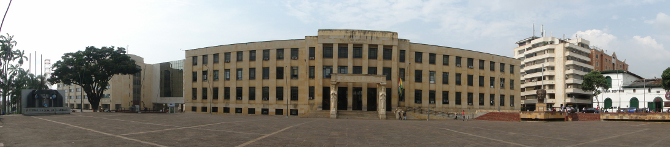 Victor Eduardo Martínez © 2010
Bucaramanga is located in the midle of Colombia on the Eastern Andes Mountains at 959 m of altitude (3146.325 ft). It is nicknamed "Beautiful City", "City of Cicadas" or “City of Parks". It is the capital of Santander department with a approximate population of 560,000 inhabitants. It is strategically located on the axis of pathways that connect Bogotá (422 Km), Cúcuta (191 Km), Medellín (478 Km) and the Atlantic Coast (534 Km). The Metropolitan Area of Bucaramanga is conformed by Floridablanca, Piedecuesta and Girón.
| Bucaramanga State Hall | |
|
Taxis or bus are the main transport choices. Since last February 2010 a new integrated public transport system was implemented. Now it is possible to use a single ticket to join Floridablanca. Bucaramanga has a template climate and its thermal levels are divided into: warm, medium and cold. Its average temperature is 23°C and annual rainfall of 1041 mm. It’s located on a plateau and surrounded by mountains. |
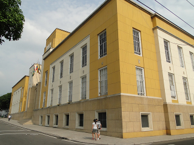 |
| Victor Eduardo Martínez © 2010 |
Bucaramanga has many green spaces on his parks, the most important are: Custodio García Rovira Park, in front of Town hall; Centenario Park, complemented by a Republican Building; Los Niños Park, to practice sports as basketball or tennis; Guillermo Sorzano González Park, nicknamed as San Pío; Mejoras Públicas Park, some cultural activities like musicians or storytellers are presented here; and La Flora Park, with paths and roads to walking and sightseeing.
Ancient buildings are located mainly at downtown of Bucaramanga as: Bolívar House, Custodio Garía Rovira House, Luis Perú de la Croix House, Centro Cultural del Oriente Building, Santander Theatre, Coliseo Peralta Theater, Sagrada Familia Church, San Laureano Church and Los Dolores Church.
| Bucaramanga Holy Family Church | |
| 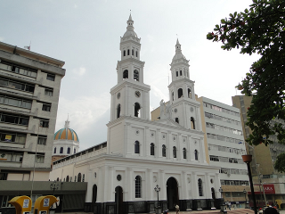 |
Luis A. Calvo Auditorium, at Universidad Industrial de Santander, is the most important building for cultural activities like music, theatre, congress and conferences. The Whole Book House, or Casa del Libro Total, is a new place in Bucaramanga for these kind activities. Festivals are organized according to the month: January, Blues and Jazz Festival; March, Tango and Argentinean Festival; April, Week of Letters; May, Festivalito Ruitoqueño Music Festival; June, Guitar Festival; July, Theatre Festival; September, Fair of Bucaramanga that is biggest festival; October, Abrapalabra Storytellers Festival; November, Puppets Festival; December, Bucaramanga Anniversary. |
| Victor Eduardo Martínez © 2010 |
Piedecuesta
The «Villa de San Carlos de Pie de la Cuesta», commonly known as "Piedecuesta", is a city in the metropolitan area of Bucaramanga. It’s also called “City of Milk and Honey” and located south of Floridablanca, over a valley into the last chaine of the Andes mountains.
The first economic activity is agriculture, with farming of sugar cane, tobacco and cocoa. The fairs are related to the economic and agribusiness, with exhibition of cow, horses and goats.
In Piedecuesta is located the Headquarters of major national petroleum research center: The Colombian Petrolium Institut (Instituto Colombiano del Petróleo) Colombia, supported by the national petrolium enterprise (Ecopetrol).
Also, UIS University has their technological park named "Guatigüara". Center of the advanced and sensible research developed by the University.
Floridablanca
Floridablanca is the second biggest city of Santander departement. Located 8km south of Bucaramanga It has a population of 250,000 inhabitans sharing the same public transport system of Bucaramanga. It is nicknamed “City of Caracolí”, due to a tree of approximately 35 m height in the native forests.
The Guane Museum has a pre-Columbian monument called The Rock of Sun (La Piedra del Sol), covered with indecipherable signs of ancient Guane culture. Near to Museum there is a park for ecological resting called Jardín Botánico Eloy Valenzuela.
A typical food in Floridablanca is Oblea; a rounded wafer filled with caramel, condensed milk, blackberry dessert and shredded cheese. The plateau of Ruitoque is located at Floridablanca.
Girón
San Juan de Girón is one of the most beautiful cities in Colombia; it was recently classified as a National Treasure of History. Located 9 km west from Bucaramanga, Girón with approximately 120000 inhabitants is an obligatory stop for turists coming from abroad. This three centuries and a half old city economics is mainly based on turism.
| Basilica Lord of Miracles | Las Nieves bridge |
| 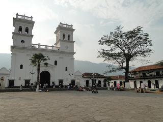 | 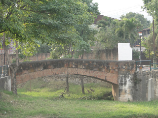 |
| Victor Eduardo Martínez © 2010 |
Girón architecture is colonial, it is highlighted by ancient churches, with special attention to the Chapel of Holy Mary of the Snows (Nuestra Señora de las Nieves) build with carved stones. The Cathedral, named Basilica Lord of Miracles (Señor de Los Milagros), is a place where the catholic Colombians refill their faith in god. During the Saint Benito Festival, men, women and children paint theirs faces in black in contastation with the european images where Saint Benito was presented white-skinned. El Malecón, which was the gold rush riverbank, is now a traditional place for touristic sightseeing where foreigners can have a typical meal.
| Holy Mary of the Snow Church | Gíron City Hall |
| 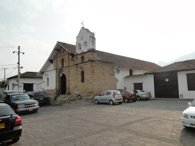 | 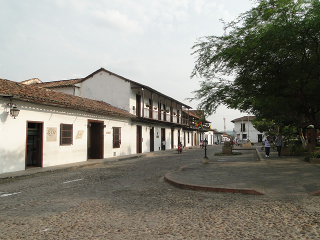 |
| Victor Eduardo Martínez © 2010 |
East view from Chicamocha canion
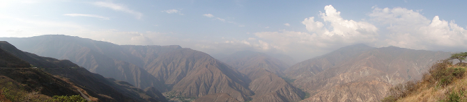 Victor Eduardo Martínez © 2010
Parque Nacional del Chicamocha is located about an hour and a half north of Bucaramanga on the road to San Gil. It is a park which combines Santanderean culture, fun activities, adventure sports, the country's biggest cable car route, and all amidst breadtaking views out over the Chicamocha canyon. The park is open from 9am to 6pm (Tuesday to Thursday), 9am to 7pm (Friday to Sunday). The cable car is open from 9am until 4.30pm. Entrance to the park costs $10,000 COP for adults ($30,000 COP including the cable car ride) and $5,000 COP for children ($15,000 COP inc. cable car).
| Chicamocha National Park | |
| 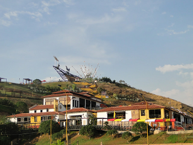 | From the entrance to the park you steadily climb the winding staircase arriving at various attractions along the way. Relief from the hot sun is provided in the form of various archways along the path which shoot out a cool spray of water as you pass under them. There are various shops and restaurants around which shows of Santanderean dances are often performed. For the vast majority the main highlight of the park will be the views across the canyon and down to the Rio Chicamocha. If and when you tire of the view, however, there are a some other decent attractions within the park with which to keep yourself occupied. sdfa s sdfa asdf |
| Victor Eduardo Martínez © 2010 |
On 16 March 1781, fed up with the ridiculously high taxes being imposed upon them, the people of Santander, led by Manuela BeltrAn, decided enough was enough and began a rebellion against Tobaco leaf monumentthe rulers of the colony which ultimately ended in independence. El Monumento a La Santandereanidad (Monument to Santander), which features a symbolic explosion of rebellion at its centre, depicts the various key players during this fight, both the heroes and the villains. The whole monument is situated on a tobacco leaf (tobacco was, and remains, one of Santander's most important industries) pointing in the direction of the town of Socorro, where many of the important events took place. The monument looks impressive viewed from above with the canyon forming the backdrop.
One of the park's more exciting attractions is 'Cable-Vuelo', a zip line that slides you down from a platform towards the top of the park to a platform further down. There are three lines depending on how much speed and vertigo you want to experience. The park also boasts an ice skating rink set on a ridge about halfway up the hill on the left hand side. The rink itself is pretty small and ordinary, and you'd barely give it a second glance if it were erected in a supermarket car park or somewhere, but the fact that it's over looking the dramatic canyon makes it quite a cool spot (pun Ice rinkintended).
| Palonegro sunset | |
|
There several other fun activities including a circuit fot buggy racing and a giant slide.
Just outside the park it is possible to organise paragliding, and at busy
times helicopter rides over the canyon.
The park also offers rafting through 'Canoas del Chicamocha' along the
Chicamocha River: Colombia Rafting Expediciones
The text about Chicamocha was extracted with the authors permission from Colombia Travel Guide © 2009, all rights reserved |
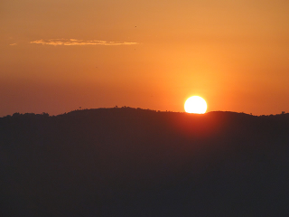 |
| Victor Eduardo Martínez © 2010 |